Battle Plan · Open
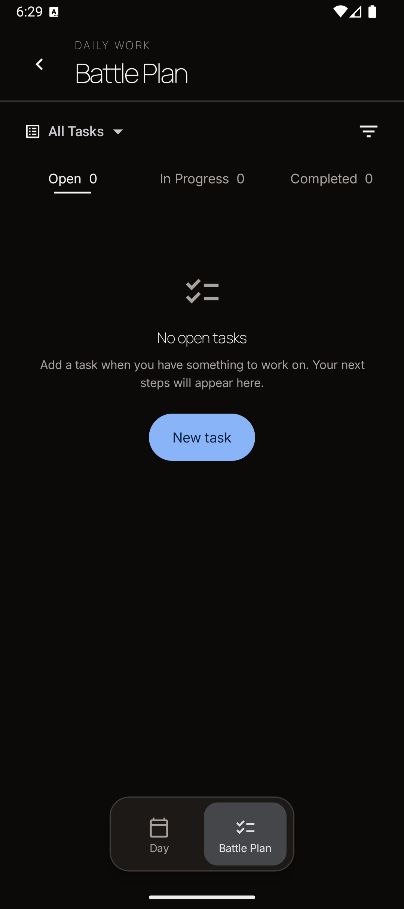
Actual native captures from the updated app, using isolated empty review data. Paused and Ended offer View active series, with no New recurrence action. The Habits picker distinguishes no routines from already tracked routines. Day is excluded.
Return to the prototype comparisons

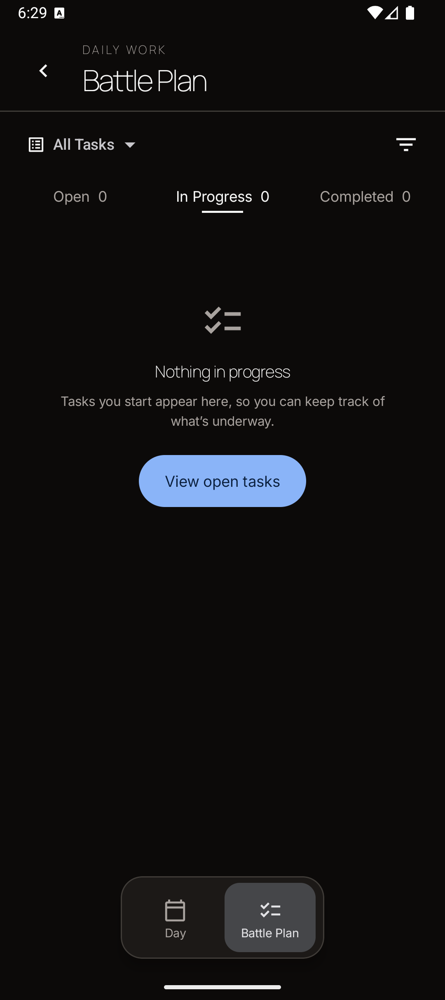
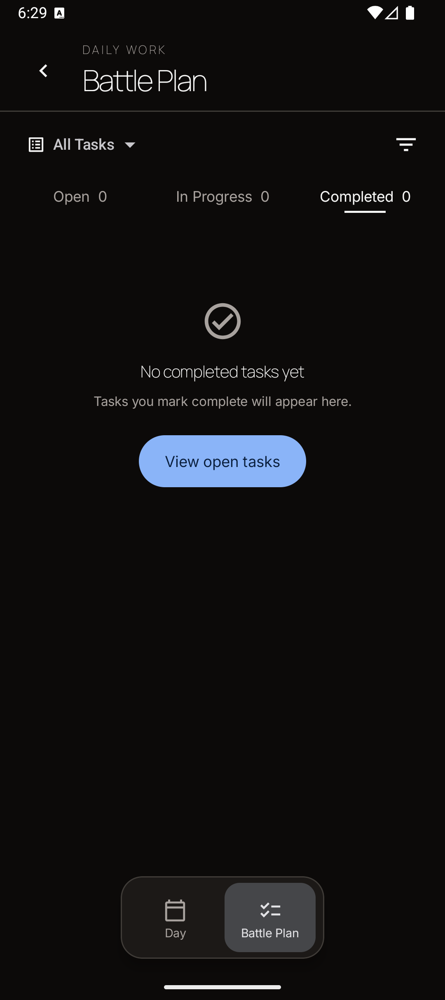
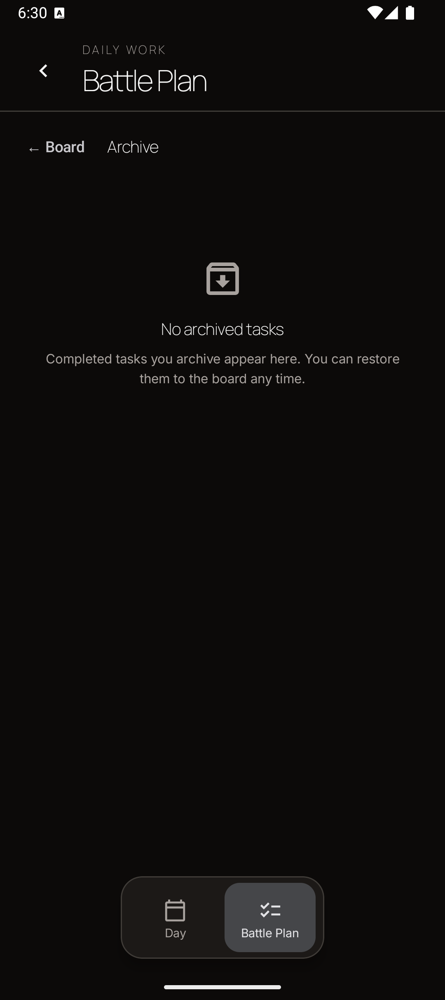
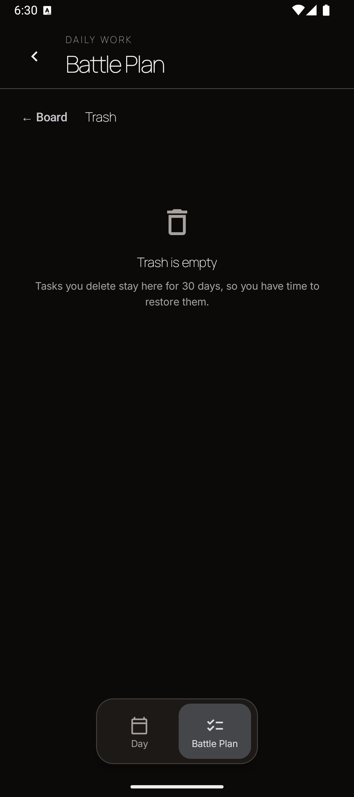
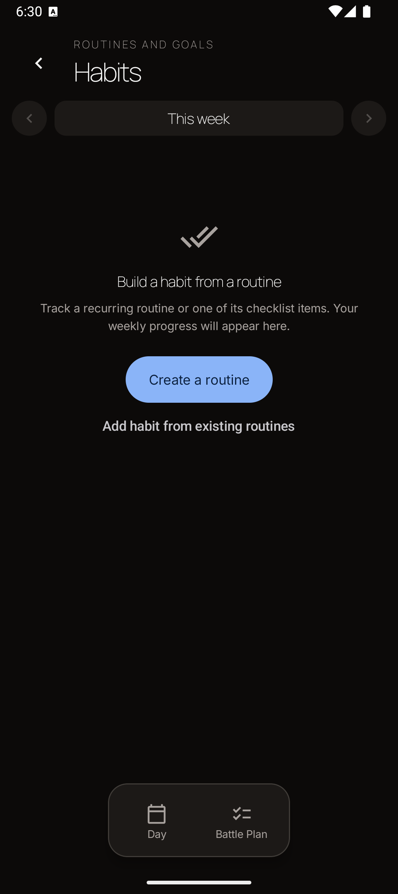
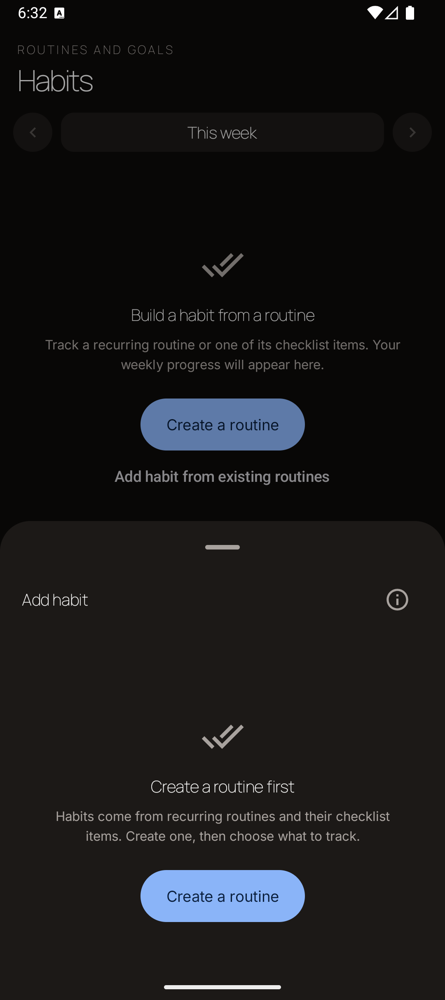
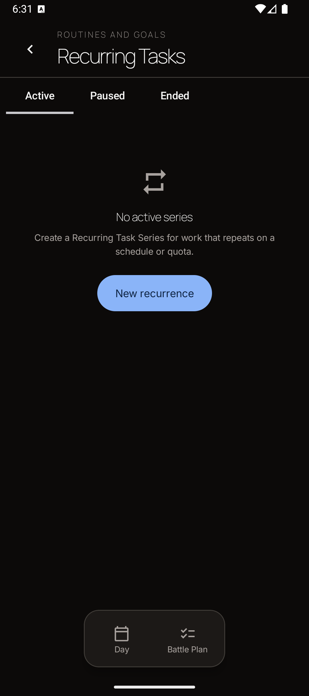
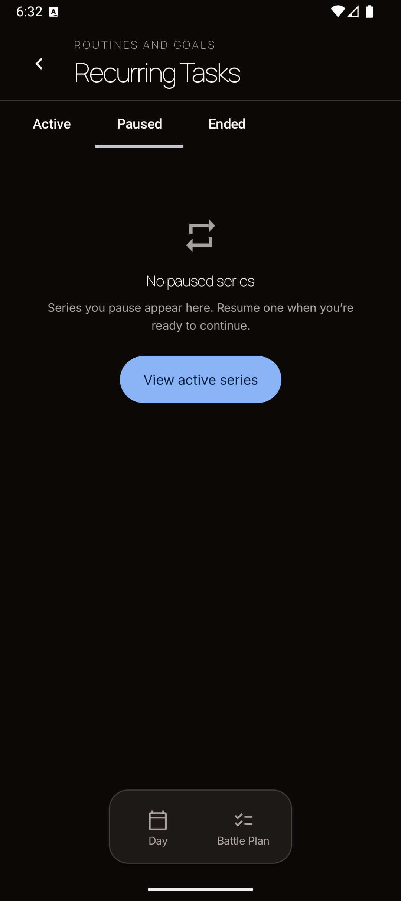
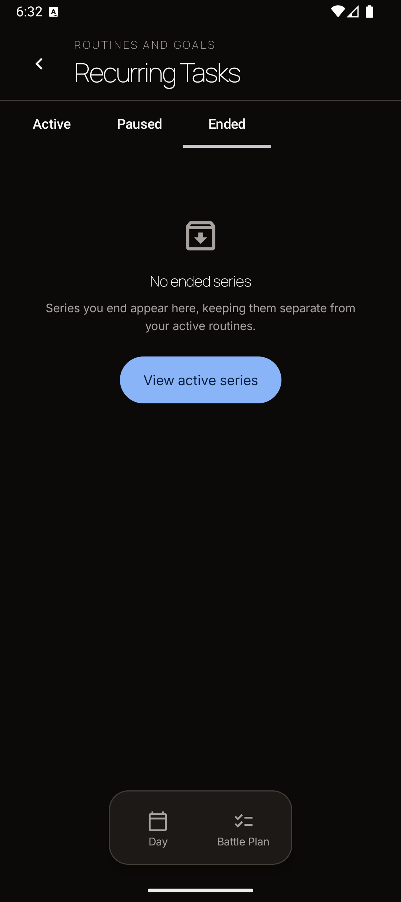
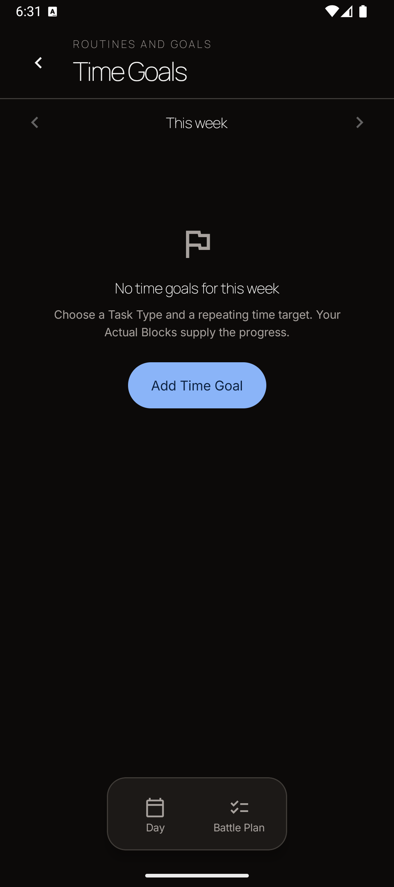